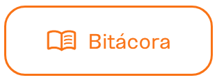

1 · Arma la escaleta de tu tráilerEs para probar: no se guarda
Toca los bloques que pondrías. Tienes {{ ganD }} segundos.
{{ g.t }}
0 sLímite: {{ ganD }} s
{{ ganTot }}segundos
{{ ganVer }}{{ ganWhy }}
Tú: {{ ganTot }} s · Valentina: gancho, de qué trata, un pedazo del capítulo y cuándo escucharlo = 27 s. Sin saludo: el saludo va en el capítulo, no en el tráiler.
Así lo hacen los profesionales · TráilerLos podcasts profesionales publican un tráiler antes del primer capítulo. Es lo primero que escucha alguien que no te conoce: dura entre 30 y 60 segundos y siempre termina diciendo dónde y cuándo escucharte.
1 · Escribe y mide tu tráilerEs para probar: no se guarda
Voces del andénCap. 2 · Escúchalo completo en mi portafolio
1080 × 1920 px · vertical 9:16
1 · ¿Dónde pones los subtítulos?
Ver lo que tapa la app
{{ verVer }}{{ verWhy }}
Tú: {{ verYou }} · Valentina: al centro, en 2 líneas cortas, con su menta y blanco.
⏱️15 a 30 s
🔤Subtítulos siempre
🎯Una sola idea
Así lo hacen los profesionales · Zona seguraTu clip vertical es la versión de tu tráiler para verse en celular desde tu portafolio. Los diseñadores de video vertical dejan libre una zona segura: arriba, abajo y a la derecha suelen aparecer botones y barras del reproductor. Lo importante va al centro.
Tráiler mudo · en parejasSaca una carta. Actúa el tráiler de esa película sin hablar. Tu pareja adivina el género antes de que acabe el tiempo. Luego cambian.
{{ mimE }}{{ mimT }}
{{ mimS }}¡Tiempo! ¿Adivinó?Fíjate: ¿qué hizo tu pareja en los primeros 3 segundos para que adivinaras?
VA{{ c.n }}/5
{{ c.t }}{{ c.foot }}
La ficha visual de Valentina
Tarjeta {{ carN }} · {{ carRole }}{{ carWhy }}
Reto: ¿cuál va en la tarjeta 1?
{{ carQFb }}
Tu turno en CanvaCrea un diseño de 1080 × 1350 px con 5 páginas. Usa tu plantilla del kit: mismos colores, misma letra y tu logo en cada página. Va dentro de tu portafolio.

Es momento de abrir tu bitácoraIngresa al Campus CTC y toca el botón Bitácora. En la entrada Mi identidad visual, pega tu portada (Episodio 7), el enlace de tu tráiler y tu prompt visual clave.
Tu evidenciaTu portafolio: toca cada pieza cuando la tengas.
Revisa tu bitácora · hoy debe estar
Tu portadaEl enlace de tu tráilerTu prompt visual clave
¿Te falta algo? Entra al Campus CTC y regístralo antes del próximo episodio.
Listo. Tu podcast ya tiene tráiler y piezas para tu portafolio. En el Episodio 9 sale al aire.
Tu ruta · 10 episodiosSigue: Episodio 9 · Al aireValentina puso su apellido y el nombre de su colegio en su portafolio. Cualquiera con el enlace podía verlo. ¿Qué se publica y qué no?